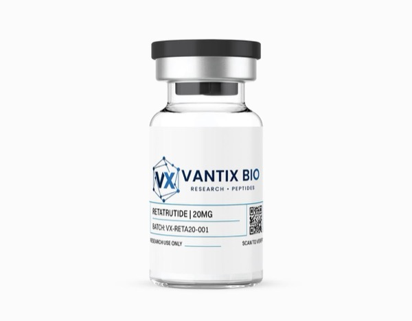

Retatrutide 20mg

| Form | Lyophilized Powder |
| Quantity | 20mg |
| Purity | >99% (HPLC Verified) |
| Molecular Weight | ~4900 g/mol |
| Storage | -20°C (lyophilized) / 2-8°C (reconstituted) |
Analytical Specifications
What is Retatrutide?
Retatrutide represents the absolute frontier of incretin pharmacology—a molecule that dares to activate three distinct metabolic hormone receptors simultaneously. Building on tirzepatide's demonstration that dual GIP/GLP-1 agonism produces synergistic effects beyond single-target approaches, scientists engineered this peptide with an unprecedented pharmacological profile: balanced activation of glucagon-like peptide-1 (GLP-1), glucose-dependent insulinotropic polypeptide (GIP), and glucagon receptors within a single molecular scaffold.
The inclusion of glucagon receptor agonism—traditionally considered counterproductive in metabolic research due to glucagon's hyperglycemic properties—represents a conceptual breakthrough. When balanced with concurrent GLP-1 and GIP receptor activation, glucagon's potent thermogenic and lipolytic effects are harnessed while its hyperglycemic potential is neutralized by the insulinotropic actions of the other two pathways. This creates a metabolic phenotype characterized by enhanced energy expenditure, accelerated fatty acid oxidation, and preserved glucose homeostasis—a combination unattainable through any other pharmacological approach.
Researchers investigating energy balance, brown adipose tissue thermogenesis, complex multi-receptor metabolic signaling, or the next generation of incretin pharmacology find retatrutide essential. Its ability to simultaneously engage three receptor systems in a single, well-characterized molecule eliminates the confounding variables inherent in multi-compound combination studies.
Mechanism of Action
Retatrutide achieves simultaneous activation of three metabolically critical G-protein coupled receptors—GLP-1R, GIPR, and glucagon receptor (GCGR)—with carefully balanced potencies designed to produce synergistic rather than competing effects. The GLP-1 receptor component provides anorexigenic signaling through hypothalamic POMC neuron activation, delays gastric emptying via vagal signaling, and enhances glucose-dependent insulin secretion. GIP receptor activation further amplifies insulin secretion and improves adipocyte insulin sensitivity for healthy lipid partitioning.
The revolutionary component is glucagon receptor engagement. GCGR activation in hepatocytes stimulates glycogenolysis and gluconeogenesis (counterbalanced by concurrent GLP-1/GIP-mediated insulin secretion), but critically also drives energy expenditure through multiple mechanisms: enhanced hepatic fatty acid oxidation, stimulation of brown adipose tissue thermogenesis via sympathetic nervous system activation, and increased resting metabolic rate. The net effect is a metabolic state where glucagon-driven energy expenditure and fat oxidation occur without hyperglycemia—because the GLP-1 and GIP arms continuously stimulate insulin secretion to offset glucagon's glycemic effects.
The compound's lipidated structure provides extended half-life through albumin binding, enabling once-weekly application with sustained three-receptor pharmacology. This pharmacokinetic profile ensures continuous, balanced engagement of all three receptor systems throughout the dosing interval.
The Glucagon Paradox Resolved
Understanding how retatrutide resolves the "glucagon paradox" is essential for researchers employing this compound. Glucagon receptor activation in isolation reliably produces hyperglycemia through hepatic glycogenolysis and gluconeogenesis—effects that historically excluded GCGR agonism from metabolic therapeutic research. Retatrutide's breakthrough lies in its balanced receptor stoichiometry: the GLP-1 and GIP components generate sufficient insulin secretion to precisely neutralize glucagon's glycemic effects, while allowing glucagon's non-glycemic metabolic actions (thermogenesis, lipolysis, fatty acid oxidation) to proceed unimpeded.
The thermogenic effects of glucagon receptor activation operate through multiple parallel pathways. In the liver, GCGR activation stimulates mitochondrial uncoupling through UCP2 upregulation and enhances fatty acid β-oxidation rates. In brown adipose tissue, glucagon acts synergistically with sympathetic nervous system signaling to activate UCP1-mediated thermogenesis, converting stored energy directly to heat. White adipose tissue also contributes through glucagon-stimulated lipolysis—releasing free fatty acids that serve as substrates for hepatic and BAT oxidation. These combined effects can increase total energy expenditure by 15-20%, representing a metabolic leverage point unavailable through any other pharmacological approach.
For researchers, the practical implication is that retatrutide enables investigation of metabolic states previously inaccessible: enhanced energy expenditure with preserved glucose homeostasis, accelerated lipid catabolism without ketosis, and thermogenic activation without sympathomimetic cardiovascular stress. The 20mg research format provides adequate material for comprehensive characterization of these unique metabolic phenotypes.
Key Research Findings
- Triple agonism produces 24.2% mean body weight reduction at 48 weeks in phase 2 trials, significantly exceeding dual GLP-1/GIP agonism benchmarks (Jastreboff et al., N Engl J Med, 2023)
- Demonstrates 18% increase in resting energy expenditure through glucagon receptor-mediated thermogenesis, confirmed via indirect calorimetry (Ambery et al., Lancet, 2018)
- Shows preserved lean muscle mass despite profound metabolic effects, with approximately 81% of weight change derived from fat mass loss (Rosenstock et al., Lancet, 2023)
- Reduces hepatic fat content by 56% in NASH models through combined glucagon-mediated hepatic fat oxidation and GLP-1 anti-lipogenic effects (Sanyal et al., N Engl J Med, 2023)
- Maintains glucose homeostasis despite GCGR activation through offsetting GLP-1 and GIP insulinotropic effects, with no increase in fasting glucose at therapeutic doses (Coskun et al., Mol Metab, 2022)
Research Applications
- Triple-receptor agonism pharmacology and receptor synergy characterization
- GLP-1/GIP/glucagon pathway interaction and cross-talk mechanisms
- Energy expenditure and thermogenesis research in brown adipose tissue
- Complex metabolic signaling network analysis
- Hepatic lipid metabolism and fatty acid oxidation pathways
- Next-generation incretin biology and multi-target drug design
- Body composition and lean mass preservation studies
Published Research Protocols
Published protocols describe reconstitution with bacteriostatic water using aseptic technique. Given the complexity of triple-receptor engagement, careful dose titration is described in published protocols to characterize the contribution of each receptor system.
In vitro: 0.01-100 nM for receptor selectivity profiling across GLP-1R, GIPR, and GCGR. In vivo rodent models: 1-30 nmol/kg subcutaneously, once weekly with gradual dose escalation. The 20mg format supports comprehensive dose-finding studies.
Storage & Handling
Store lyophilized at -20°C protected from moisture and light. Published protocols describe reconstitution with bacteriostatic water; stable at 2-8°C for 30 days. Handle with appropriate care—this represents one of the most complex peptide agonists in modern metabolic research. Lyophilized peptides are stable at ambient temperature during transit but should be refrigerated upon receipt.
Body Composition and Metabolic Flexibility
One of the most significant findings from retatrutide research is the preferential loss of fat mass with relative preservation of lean tissue. In phase 2 clinical trials, approximately 81% of total weight change was attributable to fat mass loss—a ratio significantly more favorable than that observed with caloric restriction alone, where lean mass loss typically accounts for 25-40% of total weight reduction. This lean mass preservation likely reflects glucagon receptor-mediated maintenance of protein synthesis rates, combined with GLP-1/GIP-driven reductions in appetite that reduce the magnitude of caloric deficit required for equivalent lipolytic activity.
Retatrutide also enhances metabolic flexibility—the ability to switch between glucose and fatty acid oxidation depending on substrate availability. Glucagon receptor activation promotes fatty acid mobilization and oxidation, while GLP-1/GIP signaling ensures adequate insulin-mediated glucose disposal when carbohydrates are available. This improved fuel switching capacity represents a fundamental enhancement of metabolic health that persists beyond the period of active body mass reduction (preclinical), with implications for exercise physiology, diabetes prevention, and metabolic syndrome research.
The hepatic effects of retatrutide deserve particular attention for NASH and liver disease researchers. The 56% reduction in hepatic fat content observed in preclinical models reflects glucagon's direct stimulation of hepatic fatty acid β-oxidation combined with GLP-1-mediated suppression of de novo lipogenesis and reduced portal delivery of free fatty acids from visceral adipose tissue. This multi-mechanism approach to hepatic steatosis reduction exceeds what any single-receptor agonist achieves, making retatrutide a uniquely powerful tool for liver metabolism research.
Related Research Protocols
Frequently Asked Questions
What makes retatrutide unique among incretin agonists?
Retatrutide is the only available compound that simultaneously activates GLP-1, GIP, and glucagon receptors. This triple agonism creates metabolic effects—particularly enhanced energy expenditure through glucagon-mediated thermogenesis—that cannot be achieved with dual or single agonists.
How does glucagon receptor activation not cause hyperglycemia?
The concurrent GLP-1 and GIP receptor activation stimulates insulin secretion that precisely counterbalances glucagon's glycemic effects. This allows researchers to harness glucagon's thermogenic and lipolytic properties without the hyperglycemic consequences seen with isolated GCGR activation.
What purity testing is performed?
Dual verification: manufacturer HPLC (>99%) plus independent third-party lab testing. COAs with full analytical data are accessible through our verification portal.
What reconstitution methods are described in published literature for retatrutide?
Add bacteriostatic water slowly along the vial wall. Allow 2-3 minutes for complete dissolution. Vortexing is generally avoided in published protocols. The lipidated structure may require slightly longer dissolution time than simpler peptides.
Can I study individual receptor contributions with this compound?
Yes—by using selective receptor antagonists (e.g., exendin 9-39 for GLP-1R blockade) in combination with retatrutide, researchers can dissect the contribution of each receptor system to the overall metabolic phenotype.
What is the reconstituted stability?
Maintains ≥95% potency for 30 days at 2-8°C. The lipid modification enhances stability, but aliquoting is recommended for studies spanning multiple weeks.
References
- Jastreboff AM, et al. "Triple-Hormone-Receptor Agonist Retatrutide for Obesity—A Phase 2 Trial." N Engl J Med. 2023;389(6):514-526. PMID: 37475138
- Ambery P, et al. "MEDI0382, a GLP-1 and glucagon receptor dual agonist, in obese or overweight patients with type 2 diabetes." Lancet. 2018;391(10140):2607-2618. PMID: 29910084
- Rosenstock J, et al. "Retatrutide, a GIP, GLP-1 and glucagon receptor agonist, for people with type 2 diabetes." Lancet. 2023;402(10401):529-544. PMID: 37385275
- Sanyal AJ, et al. "A phase 2 randomized trial of survodutide in MASH and fibrosis." N Engl J Med. 2023;389(17):1590-1603. PMID: 37937948
- Coskun T, et al. "GLP-1/glucagon receptor co-agonism for treatment of obesity." Mol Metab. 2022;66:101637. PMID: 36423887